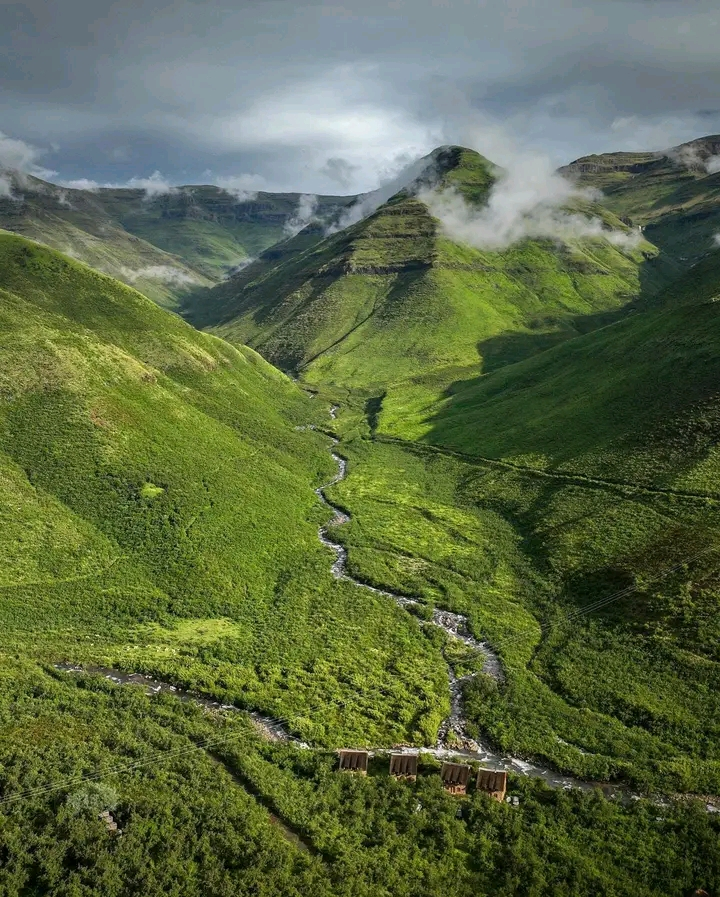

Our purpose
Explore Lesotho is a tourism information website created to introduce visitors to selected destinations, activities and travel ideas in Lesotho.
The website brings useful information together in one place and encourages visitors to learn about the country's landscapes and culture before travelling.
Our objectives
- Present selected tourist destinations.
- Share ideas for activities and accommodation research.
- Display photographs in a simple gallery.
- Provide a form for visitors to send an enquiry.
Why visit Lesotho?
Visitors can learn about Basotho traditions, local crafts, food and the importance of the traditional Basotho blanket and mokorotlo hat.
Lesotho has high mountains, valleys, rivers and waterfalls that attract people interested in photography and outdoor activities.
Depending on the location and season, visitors may explore hiking, horse riding, sightseeing and snow activities. Always check local safety guidance first.